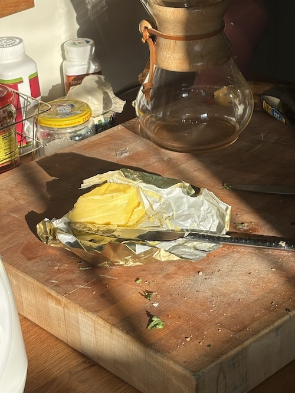
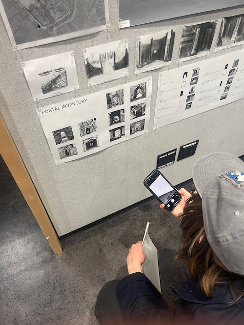
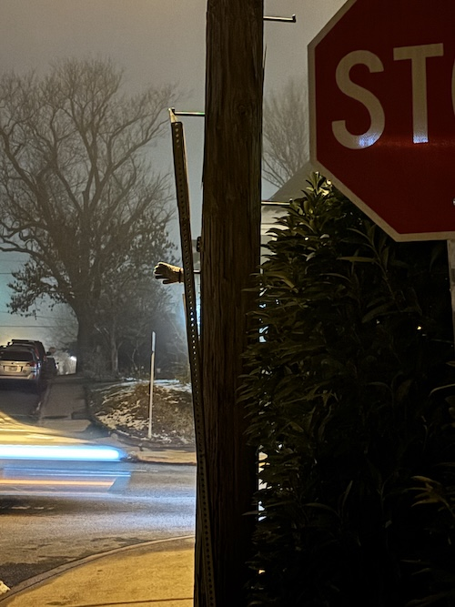
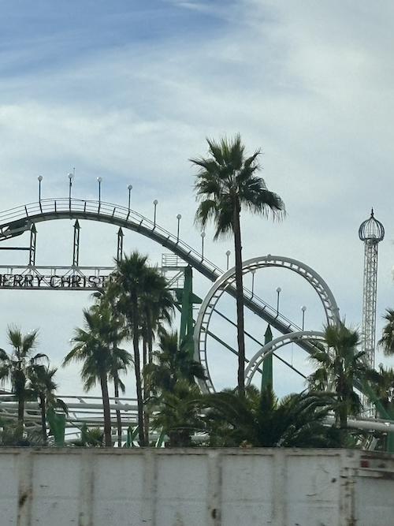
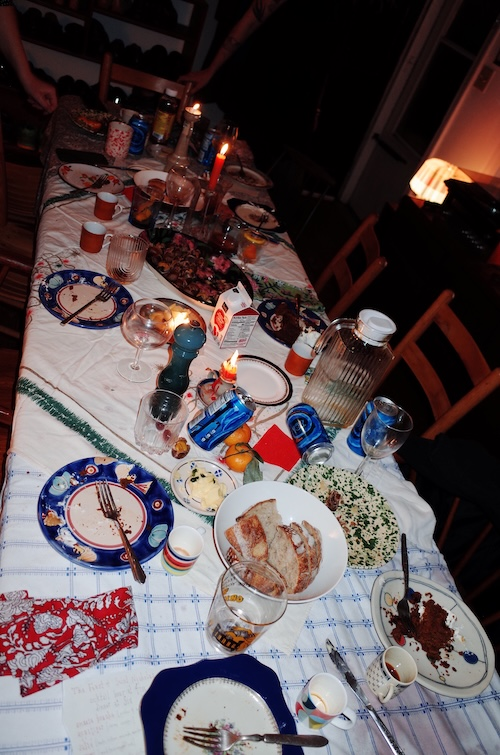
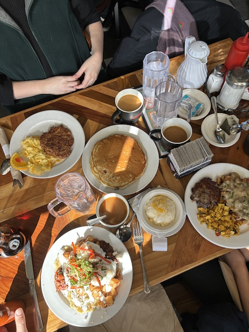
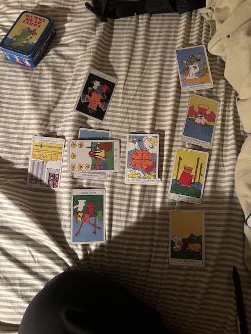
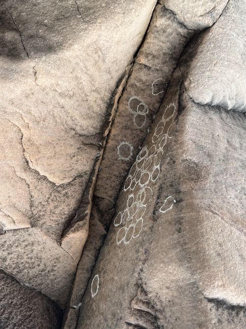

December!!
- My fear is boring so I climb inside it
- Blameless only because its ruined
- "all I got is time until the end of time".... I think Meat Loaf's Bat Out of Hell is such a genius album. I was listening to it around this time last year,
and it feels good to come back around for a moment. It just makes me smile and shake my head to myself; thank god for these gestures we share with ourselves while we're doing the dishes,
thank god for melodrama. All the snow in the backyard melted so that it's almost like it didn't happen except it did. That conundrum will get me through the rest of my life, which I hope is long.
- "To possess is to soil. To love purely is to consent to distance, it is to adore the distance between ourselves and that which we love." -Weil, GG 115
- I read Robert Gluck's "Jack the Modernist" last month, but I never recorded any of its language on here. I was reading them to people so much, I felt them in my heart
so deeply. I scanned certain pages, imagined printing and sending them in a letter to __. My heart as this mine own og blog.
- This month I find I've been reconsidering how I record my life in these 'public' spheres -- I've been quiet, I'm afraid of what to say and how. Maybe not afraid, just a little dumnb.
- well anyways, now I'm reading Gluck's "Margary Kempe" and I don't like it as much. I like youth's bombastic play. I suppose I'm unrealistic. Just like how I have never gotten over
the trip Rauschenburg and Twombly took to Morocco and Rome when they were, what, 23?
- from "Jack the Modernist"
- A jay chided, aggressive. The aroma of wild fennel, a lure. A sportscar drove by, an impulse. Lily chased a cat, fun. We stepped off the curb. Our elbows touched, a hinge.
Pieces of fog hung in a tree, perception. We walked across some grass—pastoral—and talked about the past—pastoral-historical.
When we passed La Victoria the sky was parquetry of beaten gold. Our walk tired me out with its little steps;
I wanted to take one giant step across town and into Jack.
- Still, I ached for Jack to engulf me and rewrite my life in bolder script.
The tenderness I felt for him would chart out that impulse.
There wasn't a single sentence that equaled the tenderness I intended Jack to bear me: only shared gestures over a period of time could express it.
- I want to tell you who I am; I want to be told who I am:
the rock bottom agreement that rejects any possibility of substitution whether it is a cock or a lady's shoe or a lover
or a baby or a statue of the Virgin—to refuse all meaning in favor of this meaning. The world, refused, gathers there,
generating endless fertility of metaphor which supports rather than challenges the inevitability of Jack.
- I don’t have a language to describe the intensity so I lack the thought.
- So, then, delirious, one airport to the next, rereading Mayer's "Midwinter Day" on the 22nd of December --
- I finished it in the basement of my parents' house in Arizona, my weather different from her weather, but before that,
- on the airplane, crying into it, trying not to scare the people sitting on either side of me.
- We both want to create a record of life, ours! And in ours each others!
- Project of remembering against the onslaught of time & white strappy sandals [this, on my second, shorter flight]
- "How preoccupying / Is the wish to include all or to leave all out / Some say either wish is against a poem or art / I'm asking / Is it an insane wish?"
- "There are certain dead writers / Who are like mothers who are more like moths / Coming to the light at night like friends / You and I"....
- God this one made me cry -- she's talking to me!!!!!! I want to talk to you!!!!
- All the while I was listening to Simon Diaz's "Tonadas" which I later learned was released on December 22nd, 1974
|

|
 |
 |
|

|
 |
 |
|

|
 |
 |